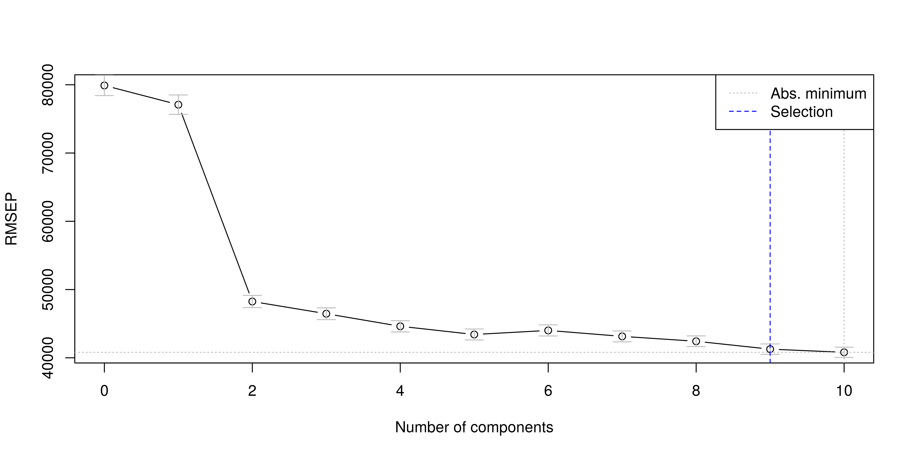

5 Régéressions sur les moindres carrés partiels
Comme pour la régression PCR, calcul de \(T\) dont les éléments sont les « scores » et les colonnes les « composantes » :
\(T = X.W\) avec \(W\) matrice des poids (ou loadings) et \(X\) matrice des variables explicatives centrées (n,m).
Mais, contrairement à la PCR, le calcul de \(T\) se fait en tenant compte de la variable à prédire \(y\). Double modélisation :
\(X = TP + R\) (1)
\(Y = TQ + F\) (2)
Avec : R matrice des résidus associées à la prédiction de \(X\) ; \(F\) vecteur des résidus associé à la prédiction de \(y\).
Première étape : calculer t1 la première composante principale, puis estimer (1) et (2) à une seule composante :
\(X = t_1 . p_1 + R1\) et \(Y = t_1 . q_1 + F_1\)
Avec \(t_1\) de dimension (n,1) \(p_1\) de dim (1,m) loadings \(q_1\) de dim (1,1) loadings
On introduit une deuxième composante \(t_2\). Ainsi, une ligne \(x_i\) de \(X\) est égale à : \(x_i = t_1i p_1 + t_2i p2\)
L’introduction de nouvelles composantes se fait selon la même procédure : partant d’un modèle à k composantes, on créé un nouveau modèle à k+1 composantes en calculant une nouvelle composante tk, puis les paramètres des deux modèles couplés :
\(X = t_1p_1+t_2 p_2 +…+t_k p_k + t_k_+1 p_k+1 + R_k+1\)
\(Y = t_1q_1+t_2 q_2 +…+t_k q_k + t_k+1 q_k+1 + F_k+1\)
5.1 Modèle PLSR avec validation croisée
La validation croisée nous permet de sélectionner le nombre de composantes à retenir dans le modèle.
model.plsr <- plsr(Sale_Price~., data = base_export,
method = pls.options()$plsralg, ncomp = 10, validation = "LOO")
summary(model.plsr)Data: X dimension: 2930 34
Y dimension: 2930 1
Fit method: kernelpls
Number of components considered: 10
VALIDATION: RMSEP
Cross-validated using 2930 leave-one-out segments.
(Intercept) 1 comps 2 comps 3 comps 4 comps 5 comps 6 comps
CV 79900 77084 48250 46459 44618 43416 44012
adjCV 79900 77084 48250 46459 44618 43416 44005
7 comps 8 comps 9 comps 10 comps
CV 43140 42424 41269 40807
adjCV 43140 42424 41268 40805
TRAINING: % variance explained
1 comps 2 comps 3 comps 4 comps 5 comps 6 comps 7 comps
X 97.780 98.53 98.84 99.22 99.34 99.45 99.85
Sale_Price 8.027 64.11 68.84 70.33 72.22 72.86 73.08
8 comps 9 comps 10 comps
X 99.89 99.90 99.91
Sale_Price 74.37 75.76 77.465.2 Le nombre de composantes
Comme nous le montre le graphique suivant, à mesure que nous ajoutons des composantes les erreurs de prédictions baissent. Toutefois nous ne voulons pas avoir beaucoup trop de composantes pour expliquer notre variable dépendante.

La validation croisée nous suggère de retenir 9 composantes dans la construction d’un modèle PLS. Nous n’allons pas retenir autant de composantes car le pouvoir explicatif de celles-ci baisse, ce qui fait que les composantes éloignées peuvent ne pas être significatives. Nous n’allons donc retenir 5 composantes qui nous offrent un bon compromis en ce sens que la 5e composantes explique 72.2% de la variance de l’endogène alors que la 6e explique seulement 72.86, soit un apport marginal très faible.
Nous estimons donc le modèle en sélectionnant 5 composantes.
model.plsr <- plsr(Sale_Price~., data = base_export,
method = pls.options()$plsralg, ncomp = 5)
summary(model.plsr)Data: X dimension: 2930 34
Y dimension: 2930 1
Fit method: kernelpls
Number of components considered: 5
TRAINING: % variance explained
1 comps 2 comps 3 comps 4 comps 5 comps
X 97.780 98.53 98.84 99.22 99.34
Sale_Price 8.027 64.11 68.84 70.33 72.225.3 Les coefficients estimés par le PLS
Les coefficients varient d’une composante à une autre. Nous choisissons de représenter les coefficients calculés par la régression sur les moindres carrés partiels à partir des 5 composantes.
| Sale_Price | |
|---|---|
| Lot_Frontage | 2.65567843 |
| Lot_Area | 0.09450319 |
| Year_Built | 25.02291105 |
| Year_Remod_Add | 17.11894194 |
| Mas_Vnr_Area | 53.99187589 |
| BsmtFin_SF_1 | -0.37974232 |
| BsmtFin_SF_2 | -19.45242139 |
| Bsmt_Unf_SF | -20.25931355 |
| Total_Bsmt_SF | 67.71763140 |
| First_Flr_SF | 15.69656128 |
| Second_Flr_SF | 29.23820959 |
| Low_Qual_Fin_SF | -7.89461600 |
| Gr_Liv_Area | 37.04015486 |
| Bsmt_Full_Bath | 0.13961835 |
| Bsmt_Half_Bath | -0.02077214 |
| Full_Bath | 0.17455210 |
| Half_Bath | 0.12698764 |
| Bedroom_AbvGr | -0.33210041 |
| Kitchen_AbvGr | -0.11093901 |
| TotRms_AbvGrd | -0.08707872 |
| Fireplaces | 0.19772083 |
| Garage_Cars | 0.41039209 |
| Garage_Area | 90.71624581 |
| Wood_Deck_SF | 32.76562657 |
| Open_Porch_SF | 10.59779031 |
| Enclosed_Porch | -16.56734799 |
| Three_season_porch | 0.92416455 |
| Screen_Porch | 5.76805957 |
| Pool_Area | -3.97712625 |
| Misc_Val | -11.70509828 |
| Mo_Sold | 0.04506869 |
| Year_Sold | -0.06208878 |
| Overall_Qual | 0.18500925 |
| Overall_Cond | -0.32626718 |
Ce graphique est souvent représenté de la manière suivante dans plusieurs logiciels. Toutefois cette dernière n’est pas très lisible. Nous allons donc commenter le premier graphique.
Comp 1 Comp 2 Comp 3 Comp 4 Comp 5
97.77952589 0.75168865 0.31301673 0.37862665 0.11859674 5.4 Loadings (chargements) and weights (poids)
Les « Loadings » reflètent (mais ne sont pas) les corrélations entre les composantes et les variables explicatives. Ils correspondent aux coordonnées sur les axes factoriels. On considère qu’une valeur supérieure à 0,4 (en valeur absolue) indique une liaison significative. Ce seuil est arbitraire (on descend parfois à 0,25). Les variables les plus excentrées sont les plus représentatives (ont une CTR plus élevée).
Le poids des variables expliquées reflètent les corrélations entre ces variables et les scores uh. Ils permettent de cerner ce qui est expliqué sur ces facteurs.
Le poids des variables explicatives reflètent la corrélation de ces variables avec les scores uh. Ils indiquent le rôle de chaque explicative dans l’explication globale de chaque axe. Dans la pratique, poids et loadings positionnent les variables de manière similaire, les interprétations sont identiques.
Loadings:
Comp 1 Comp 2 Comp 3 Comp 4 Comp 5
Lot_Frontage
Lot_Area 0.966 -0.258
Year_Built 0.142 0.158
Year_Remod_Add 0.119
Mas_Vnr_Area 0.162 0.220 0.236 0.152
BsmtFin_SF_1
BsmtFin_SF_2 -0.160 -0.245
Bsmt_Unf_SF 0.150 -0.790 0.507
Total_Bsmt_SF 0.128 0.480 0.257
First_Flr_SF 0.112 0.401 -0.106 -0.399
Second_Flr_SF 0.216 -0.156 0.323
Low_Qual_Fin_SF
Gr_Liv_Area 0.164 0.614 -0.311 -0.123
Bsmt_Full_Bath
Bsmt_Half_Bath
Full_Bath
Half_Bath
Bedroom_AbvGr
Kitchen_AbvGr
TotRms_AbvGrd
Fireplaces
Garage_Cars
Garage_Area 0.243 0.364 0.416 0.314
Wood_Deck_SF 0.145 0.159 0.123
Open_Porch_SF
Enclosed_Porch
Three_season_porch
Screen_Porch
Pool_Area
Misc_Val -0.373 0.688 -0.449
Mo_Sold
Year_Sold
Overall_Qual
Overall_Cond
Comp 1 Comp 2 Comp 3 Comp 4 Comp 5
SS loadings 1.000 1.000 1.000 1.000 1.000
Proportion Var 0.029 0.029 0.029 0.029 0.029
Cumulative Var 0.029 0.059 0.088 0.118 0.147
Loadings:
Comp 1 Comp 2 Comp 3 Comp 4 Comp 5
Sale_Price 2.950 87.750 44.614 25.186 41.210
Comp 1 Comp 2 Comp 3 Comp 4 Comp 5
SS loadings 8.7 7700.075 1990.377 634.354 1698.287
Proportion Var 8.7 7700.075 1990.377 634.354 1698.287
Cumulative Var 8.7 7708.775 9699.152 10333.506 12031.793